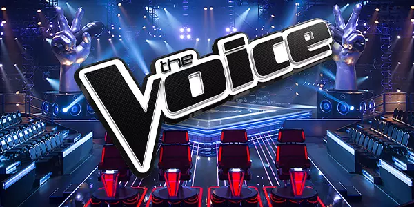
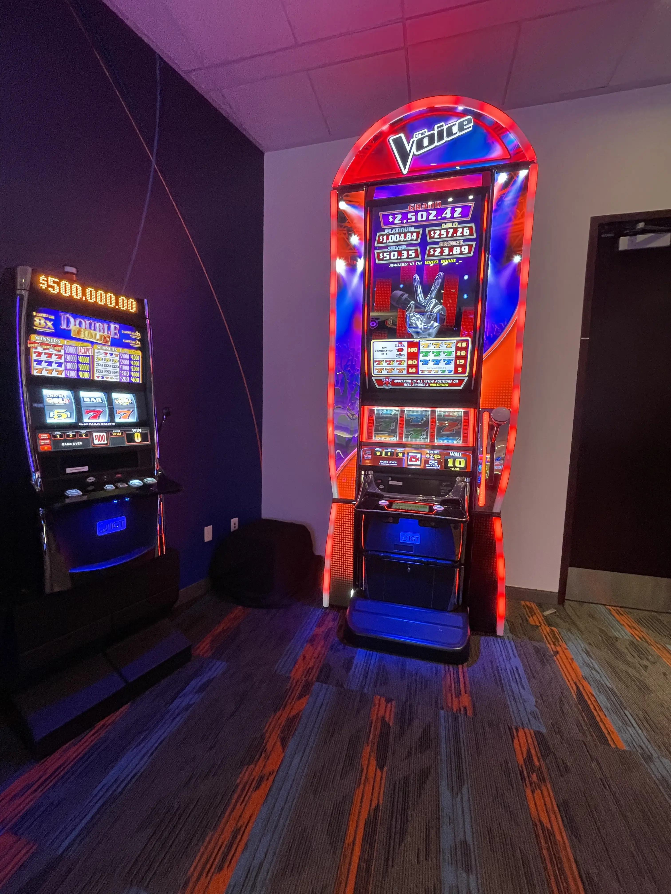

The Voice Slot Machine
Project Date: August 2019 - September 2021
Project Details
This 3 reel 9 line stepper game was honestly a project that I wasn't sure was ever going to be completed given the state of the world during it's development. At a time when every casino in the world was closed, who was clammering for another game based on the hit tv show? After being put on the shelf and picked back up when things were better, this game still really does a lot of cool stuff. The entire stage and judge's chairs are 3D and interact with the game when features are awarded. For example, when you land a full stack wild symbol on the reels, the chairs turn around revealing a multiplier. The lighting effects that we programmed to light up the stage and background respond in real time to features and triggers within the code logic. During the free games more stage scafolding appears to reveal a singing contestant and the lighting shifts to indicate that a bonus is being played. With so many 3D elements and videos performance optimizations were heavy in this game to make sure things still ran at a high framerate.

Cabinet Port
After completeing initial development of this game, we ported the game over to work on another cabinet than what was originally planned for. The new cabinet is much smaller in physical size but is close enough that we were able to do the swap without too much reengineering of how things worked.